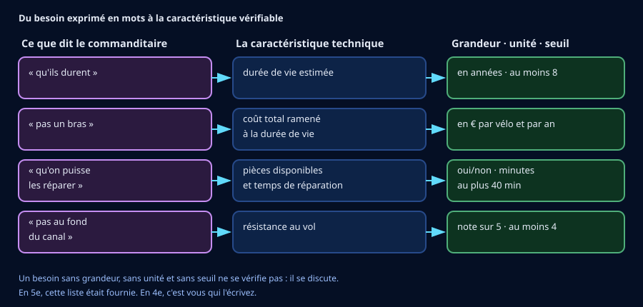

🎫 Billet d'entrée — je vérifie mes outils de 5e (5 min, sans note)
Trois questions sur ce que tu as travaillé l'an dernier. Aucune note : c'est un aiguillage. La capsule en dessous te remet en selle en trois minutes si besoin.
🎒 Je révise en 3 minutes
Un cahier des charges transforme un besoin en exigences vérifiables : une grandeur, une unité, un seuil. Tant qu'il n'est pas écrit, « la meilleure solution » ne veut rien dire.
Sur un objet qui dure, c'est l'utilisation qui pèse le plus : un petit écart quotidien multiplié par des années dépasse un coût unique, même élevé.
Une exigence est remplie ou non : elle ne se moyenne pas avec les autres.
✍️ Activité 1 — Du besoin flou aux caractéristiques mesurables (~30 min)

a) Traduire chaque mot du maire
b) Un critère peut en cacher un autre
c) Ton cahier des charges
🪜 Version étayée — des phrases à compléter
Le niveau attendu est exactement le même : on retire l'obstacle de la rédaction, pas l'exigence. Chaque ligne doit contenir un nombre et une unité.
- « Exigence 1 : la durée de vie doit être d'au moins ____ ans. »
- « Exigence 2 : le coût total doit rester sous ____ € par vélo et par an. »
- « Exigence 3 : les pièces détachées doivent être ____, et le temps de réparation inférieur à ____ min. »
- « Exigence 4 : la note d'antivol doit être d'au moins ____ sur 5. »
💡 Aide de niveau 1
Pour chaque mot du maire, pose-toi trois questions dans l'ordre : quelle grandeur j'observe ? dans quelle unité ? à partir de quelle valeur est-ce satisfaisant ?
💡💡 Aide de niveau 2
« Pas un bras » est le plus difficile, parce qu'il cache un piège : le vélo le
moins cher à l'achat peut être le plus cher à l'usage. Regarde les colonnes
prix_achat_euros, cout_entretien_annuel_euros et
duree_vie_estimee_ans — et fabrique une grandeur qui les combine.
📖 Correction complète
Une caractéristique n'est utilisable que si elle porte une grandeur, une unité et un seuil. « Solide » n'est pas une caractéristique : c'est une impression.
« Pas un bras » ne se traduit pas par le prix d'achat. Le coût qui compte est le coût total ramené à la durée de vie : un vélo à 890 € qui dure 6 ans revient plus cher qu'un vélo à 340 € qui en dure 12, avant même de compter l'entretien.
« Qu'on puisse les réparer » cache bien deux caractéristiques : on peut avoir les pièces sans pouvoir intervenir vite, et l'inverse.
Le confort peut être ajouté — à condition de le justifier : un vélo qu'on n'aime pas utiliser fait moins de kilomètres, donc amortit moins bien sa fabrication. C'est exactement le travail de la 4e : proposer un critère que personne n'a demandé, et défendre son utilité.
Enfin, quinze exigences donnent souvent zéro solution. On distingue l'indispensable (le filtre) du souhaitable (qui départage ensuite).
🧠 À retenir : une caractéristique se dit avec une grandeur, une unité et un seuil. Sans les trois, elle ne se vérifie pas — elle se discute.
⚠️ Piège classique : traduire « pas cher » par le prix d'achat. Le prix d'achat ne dit rien de ce que l'objet coûtera.
Critère de réussite : tes quatre exigences portent chacune un nombre et une unité, et tu sais dire d'où vient chacune dans la phrase du maire.
🌍 Activité 2 — Comparer les incidences, pas seulement les prix (~35 min)
Ouvre le fichier dans un tableur. Quatre flottes, dix-sept colonnes.
a) Le classement naïf
b) Rapporter au service rendu
Calcule au tableur, pour chaque flotte : (CO₂ fabrication + CO₂ entretien × durée
de vie) ÷ (durée de vie × km par an), en grammes par kilomètre.
c) Qualitatif et quantitatif
🪜 Version étayée — des phrases à compléter
- « Sur le seul critère ____, la flotte ____ arrive en tête. »
- « Mais si on rapporte au service rendu, elle passe ____, parce que ____ (chiffre : ____). »
- « Un seul critère est donc trompeur, parce qu'il ____. »
💡 Aide de niveau 1
Un bilan carbone n'a de sens que rapporté à ce que l'objet rend comme service. Ici, le service est le kilomètre parcouru par un usager.
💡💡 Aide de niveau 2
Écris la formule une fois, puis recopie-la vers le bas. Attention aux unités : les CO₂ sont en kilogrammes, le résultat demandé en grammes — il faut multiplier par 1000.
F1 : (96 + 7×12) ÷ (12×2400) = 180 kg pour 28 800 km ≈ 6,3 g/km.
📖 Correction complète
Sur le seul CO₂ de fabrication, F4 gagne largement (58 contre 210 pour F3). Mais ce chiffre seul ne dit rien : il ignore combien de temps le vélo servira et combien de kilomètres il fera.
Rapporté au service rendu : F4 ≈ 5,6 g/km, F1 ≈ 6,3, F2 ≈ 8,3, F3 ≈ 13,1. L'ordre ne change pas ici — mais l'écart, lui, change complètement de nature : F3 n'est plus « 3,6 fois pire » que F4 sur le papier, elle l'est « 2,3 fois » dans les faits. Et surtout, F1 se rapproche beaucoup de F4, alors qu'elle émet 1,7 fois plus à la fabrication.
F3 termine dernière malgré ses 3600 km par an parce qu'elle cumule beaucoup d'émissions et une vie courte : son coût de fabrication est amorti sur trop peu de kilomètres.
Enfin, « cadre non réparable » ne se chiffre pas — et écarte pourtant la solution à elle seule. Une donnée qualitative peut être décisive. Comparer, ce n'est pas seulement calculer.
🧠 À retenir : une incidence environnementale se rapporte toujours au service rendu. Et une donnée qualitative peut peser plus lourd qu'un chiffre.
⚠️ Piège classique : classer sur un seul critère, puis annoncer le résultat comme si c'était le classement général.
📐 Activité 3 — À chaque grandeur son appareil (~30 min)
![Tableau à quatre colonnes : la grandeur à mesurer, son unité, l'appareil qui convient et la précision courante. Masse en kilogrammes avec une balance au dixième de kilogramme ; encombrement en mètres au mètre ruban au millimètre ; temps de réparation en minutes au chronomètre à la seconde ; effort de rupture d'un antivol en newtons au dynamomètre au newton ; tension en volts au multimètre au centième de volt ; distance parcourue en kilomètres au compteur au kilomètre. Un encadré rappelle qu'un appareil ne mesure qu'une seule grandeur et qu'une mesure s'écrit toujours avec son unité.](Images/appareils_de_mesure.svg)
a) Associer la grandeur et l'appareil
b) La précision, et ce qu'elle change
c) Ton protocole
🪜 Version étayée — des phrases à compléter
- « J'ai choisi de vérifier l'exigence ____. »
- « Étape 1 : je prépare ____ dans les mêmes conditions pour toutes les flottes. »
- « Étape 2 : je mesure ____ avec ____, en ____ (unité). »
- « Étape 3 : je répète ____ fois et je garde ____. »
- « Étape 4 : je compare au seuil de ____ et je conclus. »
💡 Aide de niveau 1
Avant de choisir un appareil, demande-toi toujours quelle grandeur tu veux mesurer : une masse, une longueur, une durée, une force, une tension. L'appareil vient après, jamais avant.
💡💡 Aide de niveau 2
« Solide » n'est pas une grandeur. Pour le mesurer, il faut d'abord décider ce qu'on appelle solidité : la force qui fait céder le cadre ? le nombre de chocs supportés ? le temps avant la première fissure ? Chaque décision appelle un appareil différent — et c'est justement le travail demandé en 4e.
📖 Correction complète
Chronomètre pour une durée, dynamomètre pour une force, balance pour une masse : un appareil ne mesure qu'une seule grandeur. Se tromper d'appareil, c'est souvent s'être trompé de grandeur avant.
« Mesurer la solidité » n'a pas de sens tant qu'on n'a pas dit ce qu'on appelle solidité. C'est le cœur du 4e_C3.3 : transformer une qualité en grandeur mesurable, puis seulement choisir l'instrument.
Sur la précision : un appareil au dixième de kilogramme départage 17,4 et 18,9 kg sans difficulté, mais il ne peut rien dire de 13,1 contre 13,15. Refaire trois essais n'y change rien : le problème n'est pas le hasard, c'est la résolution de l'appareil. Il faut un instrument plus fin, ou accepter que les deux soient équivalentes sur ce critère.
🧠 À retenir : on choisit la grandeur avant l'appareil. Et un écart plus petit que la précision de l'appareil n'est pas un écart : c'est du bruit.
⚠️ Piège classique : annoncer un résultat plus précis que l'appareil ne le permet.
Critère de réussite : ton protocole nomme la grandeur, l'unité, l'appareil, le nombre d'essais, et compare explicitement au seuil.
🧭 Activité 4 — Filtrer, puis départager (~25 min)
On retient les quatre exigences suivantes, proches de ce que la classe a écrit : durée de vie ≥ 8 ans · pièces détachées disponibles · temps de réparation ≤ 40 min · note d'antivol ≥ 4 sur 5.
💡 Aide de niveau 1
Traite les exigences une par une et note qui tombe à chaque fois. Une flotte est écartée dès qu'elle en rate une seule.
💡💡 Aide de niveau 2
F1 : 12 ans · pièces oui · 35 min · antivol 4 → passe. F2 : 8 ans · oui · 25 min · antivol 3 → tombe. F3 : 6 ans · non · 70 min · antivol 3 → tombe trois fois. F4 : 10 ans · oui · 30 min · antivol 5 → passe.
📖 Correction complète
F1 et F4 passent les quatre exigences. F2 tombe sur l'antivol (3 pour un seuil de 4) malgré d'excellents résultats ailleurs ; F3 tombe sur trois exigences.
Le filtre ne suffit pas à décider : il reste deux flottes. C'est là qu'interviennent les critères souhaitables — et là qu'il faut assumer un choix. F4 émet moins et coûte moins cher ; F1 est plus confortable et fait 300 km de plus par vélo et par an, ce qui n'est pas rien pour un service public.
Il n'y a pas de bonne réponse unique. Il y a une réponse argumentée, qui dit ce qu'elle privilégie. C'est ce qu'on attend d'un élève de 4e.
🧠 À retenir : le filtre écarte, il ne choisit pas. Départager demande de dire ce qu'on privilégie.
✉️ Activité 5 — La note au service technique (~20 min)
🪜 Version étayée — des phrases à compléter
- « Je recommande la flotte ____. »
- « D'abord parce que ____ (chiffre : ____). »
- « Ensuite parce que ____ (chiffre : ____). »
- « Sa limite est ____ : elle ne conviendrait pas si ____. »
- « À Fort-de-France, il faudrait ajouter l'exigence ____, à cause de ____. »
📖 Correction complète
Les deux réponses se défendent, à condition d'être argumentées avec des chiffres du tableau.
La limite doit être réelle : F4 est lourde (18,9 kg) et peu confortable (2 sur 5), ce qui peut réduire son usage ; F1 émet 1,7 fois plus à la fabrication et contient peu de matière recyclée (22 %).
Pour Fort-de-France : l'air salin impose une exigence de tenue à la corrosion que Hangzhou n'exigeait pas, et le relief change complètement le rapport au poids — 18,9 kg dans les montées de Didier n'a rien à voir avec 18,9 kg sur les berges plates du lac de l'Ouest. Transposer, c'est refaire l'analyse, pas copier la solution.
🧠 À retenir : une note technique dit ce qu'elle recommande, sur quels chiffres, et ce qu'elle coûte. Sans la limite, elle n'est pas crédible.
🪞 Mon bilan personnel
💭 Rappel de ton hypothèse de départ :
🪜 Version étayée — des phrases à compléter
- « Au départ je pensais que ____. »
- « Maintenant je sais que ____, parce que ____. »
- « Ce qui a changé mon avis, c'est ____. »
🪜 Version étayée — des phrases à compléter
- « J'ai appris qu'une caractéristique se dit avec ____, ____ et ____. »
- « J'ai appris qu'une incidence se rapporte à ____. »
- « J'ai appris qu'on choisit ____ avant l'appareil. »
🪜 Version étayée — des phrases à compléter
- « Je sais maintenant écrire une exigence avec ____. »
- « Je sais maintenant rapporter une émission à ____. »
- « Je sais maintenant choisir l'appareil qui correspond à ____. »
🪜 Version étayée — des phrases à compléter
- « Je dois encore revoir ____, parce que ____. »
- « Ce que je n'arrive pas encore à faire seul·e : ____. »
- « Pour progresser, la prochaine fois je ____. »
Je me positionne
🧠 Prêt·e à t'entraîner ?
Le QCM de la séquence t'attend : 30 questions dont 2 illustrées, sur les caractéristiques, les incidences et les appareils de mesure.
Chaque réponse fausse y est expliquée — c'est là qu'est le travail.
🎁 Bonus (facultatif — hors parcours obligatoire)
Trois défis ouverts, sans vérificateur.
1. La ville ajoute une exigence : « au moins 50 % de matière recyclée ». Qui reste en lice ? Et qu'est-ce que cela dit du poids d'une exigence isolée ?
2. Invente la cinquième flotte qui satisferait les quatre exigences et battrait F4 sur le CO₂ par kilomètre. Ses dix-sept colonnes doivent rester cohérentes entre elles — c'est plus difficile qu'il n'y paraît.
3. Écris le protocole complet qui permettrait de vérifier la note d'antivol sur 5. Quelle grandeur ? Quel appareil ? Et surtout : comment passer d'une force en newtons à une note sur 5 sans tricher ?